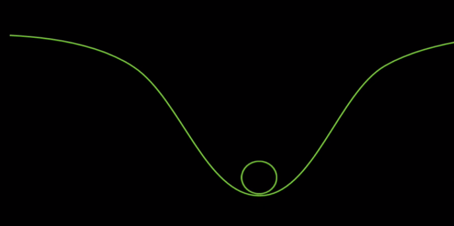
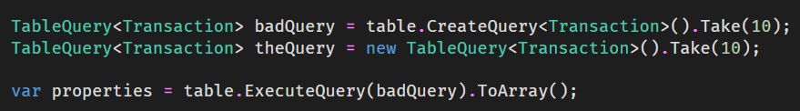
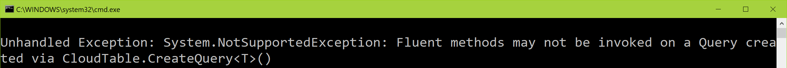

Full name: index.x
val int : value:'T -> int (requires member op_Explicit)
Full name: Microsoft.FSharp.Core.Operators.int
--------------------
type int = int32
Full name: Microsoft.FSharp.Core.int
--------------------
type int<'Measure> = int
Full name: Microsoft.FSharp.Core.int<_>
Full name: index.inferredX
Full name: index.helloWorld
Full name: Microsoft.FSharp.Core.ExtraTopLevelOperators.sprintf
Full name: index.text
Full name: index.person
type Tuple =
static member Create<'T1> : item1:'T1 -> Tuple<'T1> + 7 overloads
Full name: System.Tuple
--------------------
type Tuple<'T1> =
new : item1:'T1 -> Tuple<'T1>
member Equals : obj:obj -> bool
member GetHashCode : unit -> int
member Item1 : 'T1
member ToString : unit -> string
Full name: System.Tuple<_>
--------------------
type Tuple<'T1,'T2> =
new : item1:'T1 * item2:'T2 -> Tuple<'T1, 'T2>
member Equals : obj:obj -> bool
member GetHashCode : unit -> int
member Item1 : 'T1
member Item2 : 'T2
member ToString : unit -> string
Full name: System.Tuple<_,_>
--------------------
type Tuple<'T1,'T2,'T3> =
new : item1:'T1 * item2:'T2 * item3:'T3 -> Tuple<'T1, 'T2, 'T3>
member Equals : obj:obj -> bool
member GetHashCode : unit -> int
member Item1 : 'T1
member Item2 : 'T2
member Item3 : 'T3
member ToString : unit -> string
Full name: System.Tuple<_,_,_>
--------------------
type Tuple<'T1,'T2,'T3,'T4> =
new : item1:'T1 * item2:'T2 * item3:'T3 * item4:'T4 -> Tuple<'T1, 'T2, 'T3, 'T4>
member Equals : obj:obj -> bool
member GetHashCode : unit -> int
member Item1 : 'T1
member Item2 : 'T2
member Item3 : 'T3
member Item4 : 'T4
member ToString : unit -> string
Full name: System.Tuple<_,_,_,_>
--------------------
type Tuple<'T1,'T2,'T3,'T4,'T5> =
new : item1:'T1 * item2:'T2 * item3:'T3 * item4:'T4 * item5:'T5 -> Tuple<'T1, 'T2, 'T3, 'T4, 'T5>
member Equals : obj:obj -> bool
member GetHashCode : unit -> int
member Item1 : 'T1
member Item2 : 'T2
member Item3 : 'T3
member Item4 : 'T4
member Item5 : 'T5
member ToString : unit -> string
Full name: System.Tuple<_,_,_,_,_>
--------------------
type Tuple<'T1,'T2,'T3,'T4,'T5,'T6> =
new : item1:'T1 * item2:'T2 * item3:'T3 * item4:'T4 * item5:'T5 * item6:'T6 -> Tuple<'T1, 'T2, 'T3, 'T4, 'T5, 'T6>
member Equals : obj:obj -> bool
member GetHashCode : unit -> int
member Item1 : 'T1
member Item2 : 'T2
member Item3 : 'T3
member Item4 : 'T4
member Item5 : 'T5
member Item6 : 'T6
member ToString : unit -> string
Full name: System.Tuple<_,_,_,_,_,_>
--------------------
type Tuple<'T1,'T2,'T3,'T4,'T5,'T6,'T7> =
new : item1:'T1 * item2:'T2 * item3:'T3 * item4:'T4 * item5:'T5 * item6:'T6 * item7:'T7 -> Tuple<'T1, 'T2, 'T3, 'T4, 'T5, 'T6, 'T7>
member Equals : obj:obj -> bool
member GetHashCode : unit -> int
member Item1 : 'T1
member Item2 : 'T2
member Item3 : 'T3
member Item4 : 'T4
member Item5 : 'T5
member Item6 : 'T6
member Item7 : 'T7
...
Full name: System.Tuple<_,_,_,_,_,_,_>
--------------------
type Tuple<'T1,'T2,'T3,'T4,'T5,'T6,'T7,'TRest> =
new : item1:'T1 * item2:'T2 * item3:'T3 * item4:'T4 * item5:'T5 * item6:'T6 * item7:'T7 * rest:'TRest -> Tuple<'T1, 'T2, 'T3, 'T4, 'T5, 'T6, 'T7, 'TRest>
member Equals : obj:obj -> bool
member GetHashCode : unit -> int
member Item1 : 'T1
member Item2 : 'T2
member Item3 : 'T3
member Item4 : 'T4
member Item5 : 'T5
member Item6 : 'T6
member Item7 : 'T7
...
Full name: System.Tuple<_,_,_,_,_,_,_,_>
--------------------
Tuple(item1: 'T1) : unit
--------------------
Tuple(item1: 'T1, item2: 'T2) : unit
--------------------
Tuple(item1: 'T1, item2: 'T2, item3: 'T3) : unit
--------------------
Tuple(item1: 'T1, item2: 'T2, item3: 'T3, item4: 'T4) : unit
--------------------
Tuple(item1: 'T1, item2: 'T2, item3: 'T3, item4: 'T4, item5: 'T5) : unit
--------------------
Tuple(item1: 'T1, item2: 'T2, item3: 'T3, item4: 'T4, item5: 'T5, item6: 'T6) : unit
--------------------
Tuple(item1: 'T1, item2: 'T2, item3: 'T3, item4: 'T4, item5: 'T5, item6: 'T6, item7: 'T7) : unit
--------------------
Tuple(item1: 'T1, item2: 'T2, item3: 'T3, item4: 'T4, item5: 'T5, item6: 'T6, item7: 'T7, rest: 'TRest) : unit
Tuple.Create<'T1,'T2>(item1: 'T1, item2: 'T2) : 'T1 * 'T2
Tuple.Create<'T1,'T2,'T3>(item1: 'T1, item2: 'T2, item3: 'T3) : 'T1 * 'T2 * 'T3
Tuple.Create<'T1,'T2,'T3,'T4>(item1: 'T1, item2: 'T2, item3: 'T3, item4: 'T4) : 'T1 * 'T2 * 'T3 * 'T4
Tuple.Create<'T1,'T2,'T3,'T4,'T5>(item1: 'T1, item2: 'T2, item3: 'T3, item4: 'T4, item5: 'T5) : 'T1 * 'T2 * 'T3 * 'T4 * 'T5
Tuple.Create<'T1,'T2,'T3,'T4,'T5,'T6>(item1: 'T1, item2: 'T2, item3: 'T3, item4: 'T4, item5: 'T5, item6: 'T6) : 'T1 * 'T2 * 'T3 * 'T4 * 'T5 * 'T6
Tuple.Create<'T1,'T2,'T3,'T4,'T5,'T6,'T7>(item1: 'T1, item2: 'T2, item3: 'T3, item4: 'T4, item5: 'T5, item6: 'T6, item7: 'T7) : 'T1 * 'T2 * 'T3 * 'T4 * 'T5 * 'T6 * 'T7
Tuple.Create<'T1,'T2,'T3,'T4,'T5,'T6,'T7,'T8>(item1: 'T1, item2: 'T2, item3: 'T3, item4: 'T4, item5: 'T5, item6: 'T6, item7: 'T7, item8: 'T8) : 'T1 * 'T2 * 'T3 * 'T4 * 'T5 * 'T6 * 'T7 * 'T8
Full name: index.personShortHand
Full name: index.name
Full name: index.age
{Name: string;
Age: int;}
Full name: index.Person
val string : value:'T -> string
Full name: Microsoft.FSharp.Core.Operators.string
--------------------
type string = String
Full name: Microsoft.FSharp.Core.string
Full name: index.me
Full name: Microsoft.FSharp.Core.ExtraTopLevelOperators.printfn
| North
| South
| East
| West
Full name: index.Direction
| Cold of temperature: float<C>
| Sunny
| Wet
| Windy of Direction * windspeed: float<m/s>
Full name: index.Weather
val float : value:'T -> float (requires member op_Explicit)
Full name: Microsoft.FSharp.Core.Operators.float
--------------------
type float = Double
Full name: Microsoft.FSharp.Core.float
--------------------
type float<'Measure> = float
Full name: Microsoft.FSharp.Core.float<_>
type C = Data.UnitSystems.SI.UnitNames.coulomb
Full name: Microsoft.FSharp.Data.UnitSystems.SI.UnitSymbols.C
type m = Data.UnitSystems.SI.UnitNames.metre
Full name: Microsoft.FSharp.Data.UnitSystems.SI.UnitSymbols.m
type s = Data.UnitSystems.SI.UnitNames.second
Full name: Microsoft.FSharp.Data.UnitSystems.SI.UnitSymbols.s
Full name: index.weather
Full name: index.( |Low|Medium|High| )
Full name: index.webPageSize
Full name: Microsoft.FSharp.Core.ExtraTopLevelOperators.async
type WebClient =
inherit Component
new : unit -> WebClient
member BaseAddress : string with get, set
member CachePolicy : RequestCachePolicy with get, set
member CancelAsync : unit -> unit
member Credentials : ICredentials with get, set
member DownloadData : address:string -> byte[] + 1 overload
member DownloadDataAsync : address:Uri -> unit + 1 overload
member DownloadFile : address:string * fileName:string -> unit + 1 overload
member DownloadFileAsync : address:Uri * fileName:string -> unit + 1 overload
member DownloadString : address:string -> string + 1 overload
...
Full name: System.Net.WebClient
--------------------
WebClient() : unit
type Uri =
new : uriString:string -> Uri + 5 overloads
member AbsolutePath : string
member AbsoluteUri : string
member Authority : string
member DnsSafeHost : string
member Equals : comparand:obj -> bool
member Fragment : string
member GetComponents : components:UriComponents * format:UriFormat -> string
member GetHashCode : unit -> int
member GetLeftPart : part:UriPartial -> string
...
Full name: System.Uri
--------------------
Uri(uriString: string) : unit
Uri(uriString: string, uriKind: UriKind) : unit
Uri(baseUri: Uri, relativeUri: string) : unit
Uri(baseUri: Uri, relativeUri: Uri) : unit
Full name: index.prettyPrintTime
type DateTime =
struct
new : ticks:int64 -> DateTime + 10 overloads
member Add : value:TimeSpan -> DateTime
member AddDays : value:float -> DateTime
member AddHours : value:float -> DateTime
member AddMilliseconds : value:float -> DateTime
member AddMinutes : value:float -> DateTime
member AddMonths : months:int -> DateTime
member AddSeconds : value:float -> DateTime
member AddTicks : value:int64 -> DateTime
member AddYears : value:int -> DateTime
...
end
Full name: System.DateTime
--------------------
DateTime()
(+0 other overloads)
DateTime(ticks: int64) : unit
(+0 other overloads)
DateTime(ticks: int64, kind: DateTimeKind) : unit
(+0 other overloads)
DateTime(year: int, month: int, day: int) : unit
(+0 other overloads)
DateTime(year: int, month: int, day: int, calendar: Globalization.Calendar) : unit
(+0 other overloads)
DateTime(year: int, month: int, day: int, hour: int, minute: int, second: int) : unit
(+0 other overloads)
DateTime(year: int, month: int, day: int, hour: int, minute: int, second: int, kind: DateTimeKind) : unit
(+0 other overloads)
DateTime(year: int, month: int, day: int, hour: int, minute: int, second: int, calendar: Globalization.Calendar) : unit
(+0 other overloads)
DateTime(year: int, month: int, day: int, hour: int, minute: int, second: int, millisecond: int) : unit
(+0 other overloads)
DateTime(year: int, month: int, day: int, hour: int, minute: int, second: int, millisecond: int, kind: DateTimeKind) : unit
(+0 other overloads)
Full name: index.a
Full name: index.y
Taming Types in the Cloud
About me
I'm Isaac Abraham!

Other metadata...
- .NET dev / contractor / consultant since .NET 1.0
- Using F# for ~5 years
- Microsoft MVP (F# -> .NET -> Visual Studio -> ?)
- Based in Fulda, Germany (and occasionally London, UK)
- Founder of Compositional IT

I also make infamous PRs...
What about you?

- General purpose programming language
- Functional-first
- Powerful type system
- Awesome data manipulation capabilities
- Leads to the "pit of success"

C# / VB .NET |
F# |
|---|---|
Mutable by default |
Immutable by default |
Side-effects and statements |
Expressions |
Classes |
Functions as values |
Inheritance |
Composition |
State |
Separate data & functions |
Polymorphism |
Algebraic Data Types |
F# Primer in < 5 minutes
Values
1: 2: 3: 4: 5: 6: 7: 8: 9: 10: 11: |
|
Types
1: 2: 3: 4: 5: 6: 7: 8: 9: 10: 11: 12: 13: |
|
More Types
1: 2: 3: 4: 5: 6: 7: 8: 9: 10: 11: 12: 13: 14: |
|
Exhaustive pattern matching
1: 2: 3: 4: 5: 6: 7: |
|
Asynchronous support
1: 2: 3: 4: 5: 6: 7: |
|
ACHTUNG!

Whitespace sensitive
1: 2: 3: 4: 5: |
|
Equals is comparison!
1: 2: |
|
Immutable by default
1: 2: 3: 4: 5: |
|
REPL
- Read, Evaluate, Print Loop
- No console applications needed
- Scripts
- Explore domain quickly
- Converts quickly to full-blown assemblies
Also....
- Type Inference everywhere
- Expressions everywhere
- Type Providers

- Lower costs
- Reduce cap ex
- "Scale fast, fail fast" etc.
- Reduce time to market
- Enable distributed applications
- Deploying
- Replication
- Load balancing
- Logging
- Scale up
- Scale out
- Auth
- Resiliency
Azure and F#?
Azure and F#!


F# runs on .NET!
Cloud Applications |
F# |
|---|---|
Stateless |
Immutable, Expressions |
Data-centric |
Type Providers, Pattern Matching |
Fault tolerant |
Powerful type system |
Asynchronous |
async { } |
Distributed |
cloud { } |
Data in Azure
Azure Storage
SQL Azure

And others...
- Cosmos DB
- Redis Cache
- Data Lake
- etc. etc.
Comparing SQL, Tables and Blobs
SQL Azure |
Tables |
Blobs |
|
|---|---|---|---|
Type System |
Strong |
Weak |
Weaker |
Query Language |
Smart |
Dumb |
Dumber |
Cost |
High |
Low |
Low |
Scalability |
Medium (*) |
Medium/High |
Medium/High |
Performance |
Scalable |
Fixed (*) |
Fixed (*) |
Working with SQL Azure
- Table-level schema
- Relatively rich type system
Customer Id |
Name |
Order Count |
Balance |
|---|---|---|---|
|
|
|
|
2542685a-... |
Joe Bloggs |
23 |
126.23 |
bcf678fb-... |
Sally Smith |
12 |
59.10 |
ad081c1b-... |
{null} |
17 |
89.23 |
Working with Azure Tables
- Row-level schema
- Type checking
- No max length etc.
- All columns are nullable
1: 2: 3: |
|
Customer Id |
Name |
Order Count |
Balance |
City |
|---|---|---|---|---|
2542685a-... |
Joe Bloggs |
23 |
{N/A} |
{N/A} |
123 |
Sally Smith |
12 |
59.10 |
{N/A} |
ad081c1b-... |
{N/A} |
17 |
89.23 |
New York |
Blob Type System
- No schema
- No notion of rows / columns
- Data stored as raw documents e.g.
1: 2: 3: |
|
Compute on Azure data services
SQL |
Tables |
Blobs |
|
|---|---|---|---|
Projection |
Yes |
Yes |
No |
Filters |
Yes |
Limited |
No |
Joins |
Yes |
No |
No |
Relationships |
Yes |
No |
No |
Indexes |
Yes |
Limited |
Limited |
DEVELOPERS!
Typical tasks:
- What's in my storage account?
- What do the contents of this file look like?
- What's the schema of this table?
- What does the data in my table look like?
- What's currently on a storage queue?
Working with the Azure Storage SDK
Working with Blobs
Exploration of data?
Type safety?


Working with Tables
Type Safety?

More type safety
Code like this...

Leads to messages like this...

The Pit of Success?



Impedence mismatches

Question:
How can F# improve this?
What is the Storage TP?


DEMOS!!
Benefits of F# for data
Before |
After |
|
|---|---|---|
Missing data |
Null |
Option |
Error Handling |
Exceptions |
Result |
Remote resources |
Stringly-typed |
Type system |
Schema |
Manually generated |
Provided |
Compile-time Queries |
Unsafe |
Safe |
Applications of Storage Type Provider
- Application code for Tables
-
Exploration of data
- Log tables
- Metrics
- Exploring "heads" of blobs
- Exploring unseen tables
- Working with "well-know" blob schemas
- Can always "fall back" to standard Azure SDK
Storage Accounts cost money!
-
Every query costs
- Every time you dot into something, it costs!
-
Use schema files to specify your types
- Or use preset "dummy data" to guide provided types
-
Use the Storage Emulator
- Repoint to live storage account at runtime
Developing Type Providers
- It's a pain
- It's a REAL pain
- Debugging is next to impossible
- Running 2 IDEs side-by-side
- Slow to develop
- Dependencies are difficult to work with
- .NET Core compatibility very close!
Build and CI
Building and Testing
-
Tests = compiles :)
- Need to have the emulator running locally!
- Suite of integration tests on CI
-
Appveyor for build
- Appveyor supports Azure Storage Emulator :)
Shameless plug alert!

Thank you!